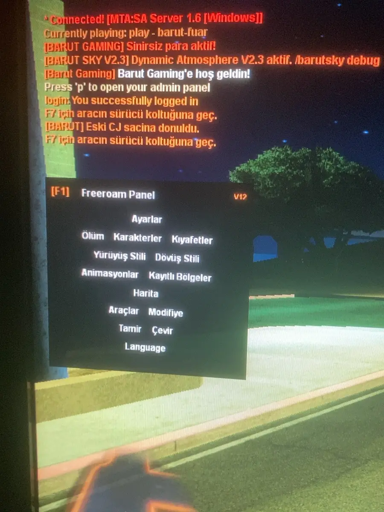
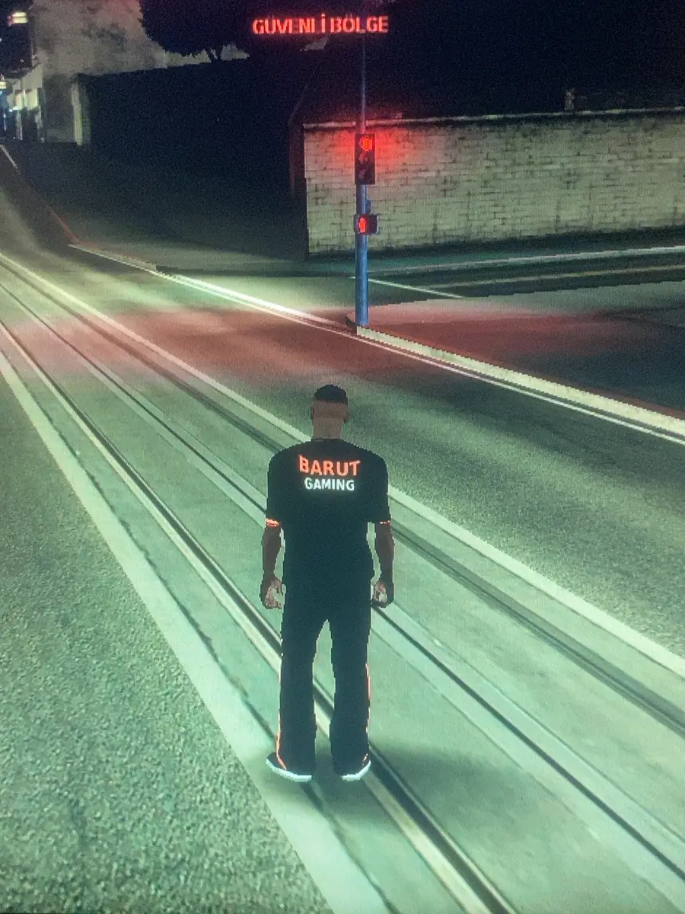
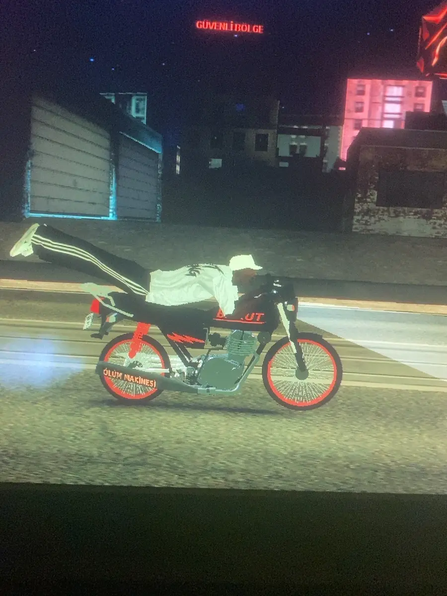

MTA:SA'YI İNDİR
Bilgisayarında GTA San Andreas ve uygun bir MTA:SA istemcisi bulunmalı.
RESMÎ MTA SİTESİ ↗Şehrin kurallarını sen yaz. Direksiyona geç, tarzını göster ve özgürlüğü Barut Gaming'de yaşa.
Sürüş, etkinlik ve özgürlüğün buluşma noktası.

Bunlar stok fotoğraflar değil; sunucumuzdan çekilmiş panel, karakter ve araç görüntüleri. Daha fazlası galeride.

01 / PANEL F1 FREEROAMKONTROL • AYARLAR↗
02 / STYLE CJ STİLİBARUT KOMBİNLERİ↗
03 / RIDE ÖZEL MOTOROYUN İÇİ GÖRÜNTÜ↗Galeri, Barut Gaming sunucusundan paylaşılan gerçek ekran görüntülerini içerir.
TÜM FOTOĞRAFLARI GÖR ↗F1–F2–F3 panellerini, CJ kombinlerini ve sunucudaki motosikletleri kendi oyun görüntülerimizle keşfet.
Fotoğraflar Barut Gaming MTA:SA sunucusundan alınmıştır. Görsellere tıklayarak büyütebilirsin.
Oyuncularımızın çektiği drift, yarış ve freeroam videoları. Yalnızca yönetici tarafından onaylanan kayıtlar burada yayınlanır.
Onaylı videolar yükleniyor...
Sunucumuzda güzel bir an mı yakaladın? Oyundaki adını, video başlığını ve açıklamasını yaz. Sonraki ekranda kaydını yükle; onaylandığında haftanın vitrininde gözüksün.
Gönderim için GitHub hesabı gerekir. Başvurular GitHub üzerinde herkese açıktır; özel bilgi paylaşmayın. Ücretsiz GitHub depolarında video yükleme sınırı genellikle 10 MB'dır. Büyük kayıtlar için YouTube'da liste dışı bağlantı kullanın.
Sunucu durumu kontrol ediliyor...
Oyuncu isimleri doğrudan MTA sunucu sorgusundan alınmaya çalışılır. Sorgu portu erişilemezse gecikmeli MTA sunucu listesi kullanılır. İsimler doğrulanamadığında gösterilmez.
MTA:SA bilgisayarda kuruluysa Oyuna Katıl butonu seni doğrudan 185.158.151.103:22003 adresine bağlar.
Barut Gaming Freeroam'a katılmak için MTA:SA'yı bilgisayarına kur, oyunu başlat ve sunucu adresini kullan. İşte kısa rehber.
Bilgisayarında GTA San Andreas ve uygun bir MTA:SA istemcisi bulunmalı.
RESMÎ MTA SİTESİ ↗Oyuna Katıl butonuyla MTA'yı aç veya sunucu adresini MTA'nın bağlantı alanına yapıştır.
Sunucu dosyalarının yüklenmesini tamamla; F1 panelini, marketi ve klan sistemini incele.
PANEL FOTOĞRAFLARINA BAK ↗Barut Gaming, Multi Theft Auto: San Andreas (MTA:SA) üzerinde oynanan bir freeroam sunucusudur. Özel araçlar, özgür sürüş, drift, coin sistemi, klanlar ve oyuncu etkinlikleriyle San Andreas dünyasında kendi tarzını oluşturabilirsin.
Barut Gaming Freeroam sunucusuna bağlanmak için bilgisayarında MTA:SA yüklü olmalı. Oyuna Katıl butonunu kullanabilir veya MTA bağlantı adresi olarak 185.158.151.103:22003 yazabilirsin.
Topluluğumuz Türkçe, İngilizce, Rusça ve Brezilya Portekizcesi seçenekleri sunar. Yeni script fikirlerini paylaşmak veya oyun içindeki bir sorunu bildirmek için sitemizdeki Script İstekleri ve Şikâyetler bölümlerini kullanabilirsin.
BARUT GAMING SUNUCUSUNA KATIL ↗Barut Gaming'in freeroam deneyimini farklı kılan sistemleri keşfet.
Stil sahibi araçlarla sokaklara çık, araç kontrol sistemlerini keşfet.
Turuncu-siyah temalı arayüz, atmosferik efektler ve karakteristik grafikler.
↗Oyun içi coin sistemi, özel ekipmanlar ve kazanılacak yeni hedefler.
↗Kendi rotanı çiz, dilediğin gibi sür ve San Andreas'ı yeniden keşfet.
↗Ekibini kur, arkadaşlarınla buluş ve topluluğun bir parçası ol.
↗Türkçe, İngilizce, Rusça ve Brezilya Portekizcesi ile dünyaya açık topluluk.
↗Sunucudan kareler, oyuncuların video paylaşımları, şikâyetler ve yeni script fikirleri tek adreste.
F1, F2, F3 panelleri, CJ kıyafetleri ve araç görüntüleri.
İNCELE ↗ ▶Oyun videonu gönder; onaylanan kayıtlar haftanın vitrinine girsin.
GÖNDER ↗ ⚑Şikâyet bildir, fotoğraf veya video kanıtı ekle.
BİLDİR ↗ ✦İstediğin sistemi öner ve diğer fikirleri beğen.
ÖNER ↗Duyurular, güncellemeler, etkinlikler ve yeni arkadaşlıklar için Barut Gaming topluluğuna katıl.
Senin hikâyen burada başlıyor.
Güncellemeler ve etkinlik duyuruları bu alanda yayınlanır.
Duyurular yönetici tarafından site ayarlarından düzenlenebilir.
Oyuncu ihlalleri, hata bildirimleri ve önerilerini ilet. İlgili bildirimleri GitHub üzerinden görüntüleyebilir ve takip edebilirsin.
📋 Şikâyetleri görüntüle ↗Not: Bildirimler herkese açık GitHub Issues sayfasına gönderilir. Şifre, telefon numarası veya kişisel bilgi paylaşma. Gönderim için ücretsiz GitHub hesabı gerekir.
İstediğin sistemi öner, diğer oyuncuların isteklerini gör ve beğen.
İstekler yükleniyor...
👍 Beğen düğmesi ilgili GitHub sayfasını açar. Orada 👍 tepkisi bırakarak destekleyebilirsin.
Herkes için keyifli bir oyun ortamı oluşturmak bizim elimizde.
BG.Bağlantı, kurulum ve topluluk hakkında en çok sorulan sorular.
Barut Gaming tanıtım sitesi ücretsiz GitHub Pages üzerinde yayınlanır. Şifrelerini sitedeki formlara yazma. Şikâyetler, script önerileri ve video başvuruları GitHub üzerinden gönderilir ve başvuru içerikleri orada herkese açık olabilir. Web hesabı için ayrı bir oturum doğrulama altyapısı henüz kurulmamıştır.
San Andreas seni bekliyor. Barut Gaming Freeroam'a katıl.